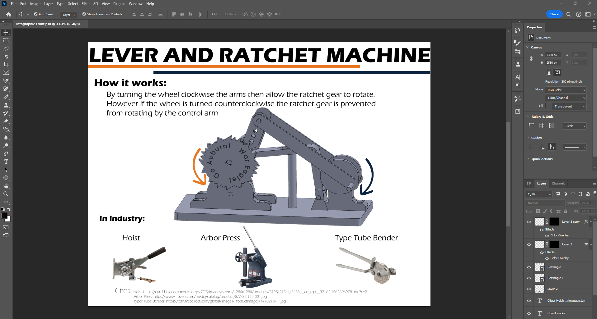
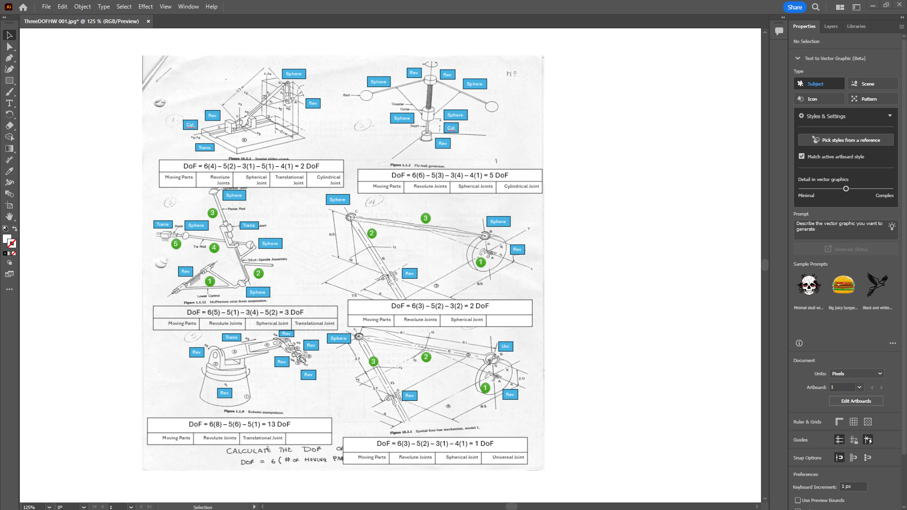

Adobe Creative Cloud Experience
I've recently begun exploring Adobe Creative Cloud applications as part of personal and academic projects. While my current skills are beginner level, I’ve enjoyed learning the fundamentals of Photoshop, Illustrator, and Premiere Pro — and I’m excited to continue improving.
Photoshop
Presentation and Techical documentation designing and improving.
Illustrator
Simple graphics and icon design. Working to build confidence with more complex tools.
Premiere Pro

I enjoy making videos for fun. Would be fun to apply to a job one day.